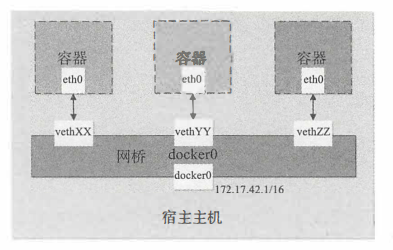

<!DOCTYPE html>
<html>
<head><meta name="generator" content="Hexo 3.9.0">
  <meta charset="utf-8">
  

  
  <title>docker入门实战（四）—— 网络访问 | Hexo</title>
  <meta name="viewport" content="width=device-width, initial-scale=1, maximum-scale=1">
  <meta name="description" content="启动与配置参数  网络启动过程Docker 服务启动时会首先在主机上自动创建一个 dockerO虚拟网桥， 实际上是一个Linux 网桥。 网桥可以理解为一个软件交换机， 负责挂载其上的接口之间进行包转发。同时， Docker 随机分配一个本地未占用的私有网段（在 RFC1918 中定义）中的一个地址给 dockerO接口。 比如典型的 172.17.0.0/16 网段， 掩码为 255.255.">
<meta name="keywords" content="docker,dockerfile">
<meta property="og:type" content="article">
<meta property="og:title" content="docker入门实战（四）—— 网络访问">
<meta property="og:url" content="http://yoursite.com/2019/09/13/docker/docker入门实战（四）—— 网络访问/index.html">
<meta property="og:site_name" content="Hexo">
<meta property="og:description" content="启动与配置参数  网络启动过程Docker 服务启动时会首先在主机上自动创建一个 dockerO虚拟网桥， 实际上是一个Linux 网桥。 网桥可以理解为一个软件交换机， 负责挂载其上的接口之间进行包转发。同时， Docker 随机分配一个本地未占用的私有网段（在 RFC1918 中定义）中的一个地址给 dockerO接口。 比如典型的 172.17.0.0/16 网段， 掩码为 255.255.">
<meta property="og:locale" content="en">
<meta property="og:image" content="http://yoursite.com/2019/09/13/docker/docker入门实战（四）——%20网络访问/network.png">
<meta property="og:updated_time" content="2019-02-22T08:36:38.000Z">
<meta name="twitter:card" content="summary">
<meta name="twitter:title" content="docker入门实战（四）—— 网络访问">
<meta name="twitter:description" content="启动与配置参数  网络启动过程Docker 服务启动时会首先在主机上自动创建一个 dockerO虚拟网桥， 实际上是一个Linux 网桥。 网桥可以理解为一个软件交换机， 负责挂载其上的接口之间进行包转发。同时， Docker 随机分配一个本地未占用的私有网段（在 RFC1918 中定义）中的一个地址给 dockerO接口。 比如典型的 172.17.0.0/16 网段， 掩码为 255.255.">
<meta name="twitter:image" content="http://yoursite.com/2019/09/13/docker/docker入门实战（四）——%20网络访问/network.png">
  
    <link rel="alternate" href="/atom.xml" title="Hexo" type="application/atom+xml">
  
  
    <link rel="icon" href="/favicon.png">
  
  
    <link href="//fonts.googleapis.com/css?family=Source+Code+Pro" rel="stylesheet" type="text/css">
  
  <link rel="stylesheet" href="/css/style.css">
</head>
</html>
<body>
  <div id="container">
    <div id="wrap">
      <header id="header">
  <div id="banner"></div>
  <div id="header-outer" class="outer">
    <div id="header-title" class="inner">
      <h1 id="logo-wrap">
        <a href="/" id="logo">Hexo</a>
      </h1>
      
    </div>
    <div id="header-inner" class="inner">
      <nav id="main-nav">
        <a id="main-nav-toggle" class="nav-icon"></a>
        
          <a class="main-nav-link" href="/">Home</a>
        
          <a class="main-nav-link" href="/archives">Archives</a>
        
      </nav>
      <nav id="sub-nav">
        
          <a id="nav-rss-link" class="nav-icon" href="/atom.xml" title="RSS Feed"></a>
        
        <a id="nav-search-btn" class="nav-icon" title="Search"></a>
      </nav>
      <div id="search-form-wrap">
        <form action="//google.com/search" method="get" accept-charset="UTF-8" class="search-form"><input type="search" name="q" class="search-form-input" placeholder="Search"><button type="submit" class="search-form-submit">&#xF002;</button><input type="hidden" name="sitesearch" value="http://yoursite.com"></form>
      </div>
    </div>
  </div>
</header>
      <div class="outer">
        <section id="main"><article id="post-docker/docker入门实战（四）—— 网络访问" class="article article-type-post" itemscope itemprop="blogPost">
  <div class="article-meta">
    <a href="/2019/09/13/docker/docker入门实战（四）—— 网络访问/" class="article-date">
  <time datetime="2019-09-13T04:49:42.000Z" itemprop="datePublished">2019-09-13</time>
</a>
    
  <div class="article-category">
    <a class="article-category-link" href="/categories/docker/">docker</a>
  </div>

  </div>
  <div class="article-inner">
    
    
      <header class="article-header">
        
  
    <h1 class="article-title" itemprop="name">
      docker入门实战（四）—— 网络访问
    </h1>
  

      </header>
    
    <div class="article-entry" itemprop="articleBody">
      
        <p>启动与配置参数</p>
<ol>
<li>网络启动过程<br>Docker 服务启动时会首先在主机上自动创建一个 dockerO虚拟网桥， 实际上是一个Linux 网桥。 网桥可以理解为一个软件交换机， 负责挂载其上的接口之间进行包转发。<br>同时， Docker 随机分配一个本地未占用的私有网段（在 RFC1918 中定义）中的一个地址<br>给 dockerO接口。 比如典型的 172.17.0.0/16 网段， 掩码为 255.255.0.0。 此后启动的容器内的网口也会自动分配一个该网段的地址。</li>
</ol>
<a id="more"></a>
<p>当创建一个 Docker 容器的时候， 同时会创建了一对veth pair 订互联接口。 当向任一个接<br>口发送包时， 另外一个接口自动收到相同的包。 互联接口的一端位于容器内， 即ethO; 另一<br>端在本地并被挂载到 docker O网桥， 名称以veth 开头（例如 vethAQI2QT) 。 通过这种方式，<br>主机可以与容器通信， 容器之间也可以相互通信。 如此一来， Docker就创建了在主机和所有<br>容器之间一个虚拟共享网络， 如图 20-1 所示。<br></p>
<ol start="2">
<li>配置容器DNS和主机名</li>
<li>相关配置文件</li>
</ol>
<p>容器中主机名和DNS配置信息可以通过三个系统配置文件来管理:/etc/resolv.conf,/etc/hostname和/etc/hosts</p>
<p>启动一个容器，在容器中使用mount命令可以看到这三个文件的挂载信息</p>
<blockquote>
<p>docker run -it ubuntu:15.10<br>root@e904767160e2:/# mount<br>/dev/mapper/centos-root on /etc/resolv.conf type xfs<br>/dev/mapper/centos-root on /etc/hostname type xfs<br>/dev/mapper/centos-root on /etc/hosts type xfs </p>
</blockquote>
<p>docker启动容器时，会从宿主机复制/etc/resolv.conf文件，并删除其中无法连接到的DNS服务器</p>
<p>2.容器内修改配置文件<br>容器运行时，可以在运行中的容器里直接编辑/etc/hosts 、/etc/hostname 和/etc/resolve.<br>conf 文件 。但是这些修改是临时的，只在运行的容器中保留，容器终止或重启后并不会被保<br>存下来，也不会被 docker commit提交</p>

      
    </div>
    <footer class="article-footer">
      <a data-url="http://yoursite.com/2019/09/13/docker/docker入门实战（四）—— 网络访问/" data-id="ck0hncd5y0012fyxxfdl5k1n8" class="article-share-link">Share</a>
      
      
  <ul class="article-tag-list"><li class="article-tag-list-item"><a class="article-tag-list-link" href="/tags/docker/">docker</a></li><li class="article-tag-list-item"><a class="article-tag-list-link" href="/tags/dockerfile/">dockerfile</a></li></ul>

    </footer>
  </div>
  
    
<nav id="article-nav">
  
    <a href="/2019/09/13/docker/docker入门实战（三）——dockerfile指令/" id="article-nav-newer" class="article-nav-link-wrap">
      <strong class="article-nav-caption">Newer</strong>
      <div class="article-nav-title">
        
          docker入门实战（三）—— dockerfile 指令
        
      </div>
    </a>
  
  
    <a href="/2019/09/13/docker/docker基本使用/" id="article-nav-older" class="article-nav-link-wrap">
      <strong class="article-nav-caption">Older</strong>
      <div class="article-nav-title">docker入门（一）----mysql镜像使用</div>
    </a>
  
</nav>

  
</article>

</section>
        
          <aside id="sidebar">
  
    
  <div class="widget-wrap">
    <h3 class="widget-title">Categories</h3>
    <div class="widget">
      <ul class="category-list"><li class="category-list-item"><a class="category-list-link" href="/categories/GPU/">GPU</a></li><li class="category-list-item"><a class="category-list-link" href="/categories/Go/">Go</a></li><li class="category-list-item"><a class="category-list-link" href="/categories/Spark/">Spark</a></li><li class="category-list-item"><a class="category-list-link" href="/categories/docker/">docker</a></li><li class="category-list-item"><a class="category-list-link" href="/categories/go/">go</a></li><li class="category-list-item"><a class="category-list-link" href="/categories/golang/">golang</a></li><li class="category-list-item"><a class="category-list-link" href="/categories/linux/">linux</a></li><li class="category-list-item"><a class="category-list-link" href="/categories/node/">node</a></li><li class="category-list-item"><a class="category-list-link" href="/categories/书中自有黄金屋/">书中自有黄金屋</a></li><li class="category-list-item"><a class="category-list-link" href="/categories/人生苦短我用python/">人生苦短我用python</a><ul class="category-list-child"><li class="category-list-item"><a class="category-list-link" href="/categories/人生苦短我用python/linux环境配置/">linux环境配置</a></li></ul></li><li class="category-list-item"><a class="category-list-link" href="/categories/其他/">其他</a></li><li class="category-list-item"><a class="category-list-link" href="/categories/分布式/">分布式</a><ul class="category-list-child"><li class="category-list-item"><a class="category-list-link" href="/categories/分布式/分布式共识算法/">分布式共识算法</a></li></ul></li><li class="category-list-item"><a class="category-list-link" href="/categories/分布式基本理论/">分布式基本理论</a></li><li class="category-list-item"><a class="category-list-link" href="/categories/区块链/">区块链</a><ul class="category-list-child"><li class="category-list-item"><a class="category-list-link" href="/categories/区块链/Hyperledger-Fabric/">Hyperledger Fabric</a></li><li class="category-list-item"><a class="category-list-link" href="/categories/区块链/《区块链：从数字货币到信用社会》/">《区块链：从数字货币到信用社会》</a></li><li class="category-list-item"><a class="category-list-link" href="/categories/区块链/以太坊开发/">以太坊开发</a></li><li class="category-list-item"><a class="category-list-link" href="/categories/区块链/区块链基本原理/">区块链基本原理</a></li><li class="category-list-item"><a class="category-list-link" href="/categories/区块链/比特币原理/">比特币原理</a></li></ul></li><li class="category-list-item"><a class="category-list-link" href="/categories/大数据/">大数据</a></li><li class="category-list-item"><a class="category-list-link" href="/categories/工具/">工具</a></li><li class="category-list-item"><a class="category-list-link" href="/categories/编程基础/">编程基础</a></li><li class="category-list-item"><a class="category-list-link" href="/categories/问题记录/">问题记录</a></li></ul>
    </div>
  </div>


  
    
  <div class="widget-wrap">
    <h3 class="widget-title">Tags</h3>
    <div class="widget">
      <ul class="tag-list"><li class="tag-list-item"><a class="tag-list-link" href="/tags/ACID/">ACID</a></li><li class="tag-list-item"><a class="tag-list-link" href="/tags/CAP/">CAP</a></li><li class="tag-list-item"><a class="tag-list-link" href="/tags/ECDSA/">ECDSA</a></li><li class="tag-list-item"><a class="tag-list-link" href="/tags/GO/">GO</a></li><li class="tag-list-item"><a class="tag-list-link" href="/tags/GPU/">GPU</a></li><li class="tag-list-item"><a class="tag-list-link" href="/tags/Hyperledger-Fabric/">Hyperledger Fabric</a></li><li class="tag-list-item"><a class="tag-list-link" href="/tags/PBFT/">PBFT</a></li><li class="tag-list-item"><a class="tag-list-link" href="/tags/Spark/">Spark</a></li><li class="tag-list-item"><a class="tag-list-link" href="/tags/blockchain/">blockchain</a></li><li class="tag-list-item"><a class="tag-list-link" href="/tags/c/">c++</a></li><li class="tag-list-item"><a class="tag-list-link" href="/tags/centos/">centos</a></li><li class="tag-list-item"><a class="tag-list-link" href="/tags/centos7/">centos7</a></li><li class="tag-list-item"><a class="tag-list-link" href="/tags/cuda/">cuda</a></li><li class="tag-list-item"><a class="tag-list-link" href="/tags/docker/">docker</a></li><li class="tag-list-item"><a class="tag-list-link" href="/tags/dockerfile/">dockerfile</a></li><li class="tag-list-item"><a class="tag-list-link" href="/tags/eos/">eos</a></li><li class="tag-list-item"><a class="tag-list-link" href="/tags/gas/">gas</a></li><li class="tag-list-item"><a class="tag-list-link" href="/tags/git/">git</a></li><li class="tag-list-item"><a class="tag-list-link" href="/tags/go/">go</a></li><li class="tag-list-item"><a class="tag-list-link" href="/tags/hadoop/">hadoop</a></li><li class="tag-list-item"><a class="tag-list-link" href="/tags/hyperledger-fabric/">hyperledger fabric</a></li><li class="tag-list-item"><a class="tag-list-link" href="/tags/js/">js</a></li><li class="tag-list-item"><a class="tag-list-link" href="/tags/leveldb/">leveldb</a></li><li class="tag-list-item"><a class="tag-list-link" href="/tags/linux/">linux</a></li><li class="tag-list-item"><a class="tag-list-link" href="/tags/mysql/">mysql</a></li><li class="tag-list-item"><a class="tag-list-link" href="/tags/node/">node</a></li><li class="tag-list-item"><a class="tag-list-link" href="/tags/nvcc/">nvcc</a></li><li class="tag-list-item"><a class="tag-list-link" href="/tags/paxos/">paxos</a></li><li class="tag-list-item"><a class="tag-list-link" href="/tags/pos/">pos</a></li><li class="tag-list-item"><a class="tag-list-link" href="/tags/pow/">pow</a></li><li class="tag-list-item"><a class="tag-list-link" href="/tags/python/">python</a></li><li class="tag-list-item"><a class="tag-list-link" href="/tags/python3/">python3</a></li><li class="tag-list-item"><a class="tag-list-link" href="/tags/spv/">spv</a></li><li class="tag-list-item"><a class="tag-list-link" href="/tags/yaml/">yaml</a></li><li class="tag-list-item"><a class="tag-list-link" href="/tags/zab/">zab</a></li><li class="tag-list-item"><a class="tag-list-link" href="/tags/以太坊/">以太坊</a></li><li class="tag-list-item"><a class="tag-list-link" href="/tags/分布式共识算法/">分布式共识算法</a></li><li class="tag-list-item"><a class="tag-list-link" href="/tags/分布式数据库/">分布式数据库</a></li><li class="tag-list-item"><a class="tag-list-link" href="/tags/分布式理论/">分布式理论</a></li><li class="tag-list-item"><a class="tag-list-link" href="/tags/区块链/">区块链</a></li><li class="tag-list-item"><a class="tag-list-link" href="/tags/地址生成/">地址生成</a></li><li class="tag-list-item"><a class="tag-list-link" href="/tags/大数据/">大数据</a></li><li class="tag-list-item"><a class="tag-list-link" href="/tags/密码学/">密码学</a></li><li class="tag-list-item"><a class="tag-list-link" href="/tags/挖矿/">挖矿</a></li><li class="tag-list-item"><a class="tag-list-link" href="/tags/比特币/">比特币</a></li><li class="tag-list-item"><a class="tag-list-link" href="/tags/编程基础/">编程基础</a></li><li class="tag-list-item"><a class="tag-list-link" href="/tags/错误记录/">错误记录</a></li><li class="tag-list-item"><a class="tag-list-link" href="/tags/问题记录/">问题记录</a></li><li class="tag-list-item"><a class="tag-list-link" href="/tags/阅读/">阅读</a></li></ul>
    </div>
  </div>


  
    
  <div class="widget-wrap">
    <h3 class="widget-title">Tag Cloud</h3>
    <div class="widget tagcloud">
      <a href="/tags/ACID/" style="font-size: 11.67px;">ACID</a> <a href="/tags/CAP/" style="font-size: 10px;">CAP</a> <a href="/tags/ECDSA/" style="font-size: 15px;">ECDSA</a> <a href="/tags/GO/" style="font-size: 13.33px;">GO</a> <a href="/tags/GPU/" style="font-size: 11.67px;">GPU</a> <a href="/tags/Hyperledger-Fabric/" style="font-size: 16.67px;">Hyperledger Fabric</a> <a href="/tags/PBFT/" style="font-size: 10px;">PBFT</a> <a href="/tags/Spark/" style="font-size: 10px;">Spark</a> <a href="/tags/blockchain/" style="font-size: 20px;">blockchain</a> <a href="/tags/c/" style="font-size: 11.67px;">c++</a> <a href="/tags/centos/" style="font-size: 11.67px;">centos</a> <a href="/tags/centos7/" style="font-size: 15px;">centos7</a> <a href="/tags/cuda/" style="font-size: 10px;">cuda</a> <a href="/tags/docker/" style="font-size: 18.33px;">docker</a> <a href="/tags/dockerfile/" style="font-size: 11.67px;">dockerfile</a> <a href="/tags/eos/" style="font-size: 10px;">eos</a> <a href="/tags/gas/" style="font-size: 10px;">gas</a> <a href="/tags/git/" style="font-size: 10px;">git</a> <a href="/tags/go/" style="font-size: 15px;">go</a> <a href="/tags/hadoop/" style="font-size: 10px;">hadoop</a> <a href="/tags/hyperledger-fabric/" style="font-size: 10px;">hyperledger fabric</a> <a href="/tags/js/" style="font-size: 10px;">js</a> <a href="/tags/leveldb/" style="font-size: 10px;">leveldb</a> <a href="/tags/linux/" style="font-size: 13.33px;">linux</a> <a href="/tags/mysql/" style="font-size: 15px;">mysql</a> <a href="/tags/node/" style="font-size: 10px;">node</a> <a href="/tags/nvcc/" style="font-size: 10px;">nvcc</a> <a href="/tags/paxos/" style="font-size: 10px;">paxos</a> <a href="/tags/pos/" style="font-size: 10px;">pos</a> <a href="/tags/pow/" style="font-size: 10px;">pow</a> <a href="/tags/python/" style="font-size: 13.33px;">python</a> <a href="/tags/python3/" style="font-size: 15px;">python3</a> <a href="/tags/spv/" style="font-size: 11.67px;">spv</a> <a href="/tags/yaml/" style="font-size: 10px;">yaml</a> <a href="/tags/zab/" style="font-size: 10px;">zab</a> <a href="/tags/以太坊/" style="font-size: 10px;">以太坊</a> <a href="/tags/分布式共识算法/" style="font-size: 15px;">分布式共识算法</a> <a href="/tags/分布式数据库/" style="font-size: 10px;">分布式数据库</a> <a href="/tags/分布式理论/" style="font-size: 13.33px;">分布式理论</a> <a href="/tags/区块链/" style="font-size: 11.67px;">区块链</a> <a href="/tags/地址生成/" style="font-size: 10px;">地址生成</a> <a href="/tags/大数据/" style="font-size: 11.67px;">大数据</a> <a href="/tags/密码学/" style="font-size: 10px;">密码学</a> <a href="/tags/挖矿/" style="font-size: 10px;">挖矿</a> <a href="/tags/比特币/" style="font-size: 11.67px;">比特币</a> <a href="/tags/编程基础/" style="font-size: 11.67px;">编程基础</a> <a href="/tags/错误记录/" style="font-size: 10px;">错误记录</a> <a href="/tags/问题记录/" style="font-size: 10px;">问题记录</a> <a href="/tags/阅读/" style="font-size: 11.67px;">阅读</a>
    </div>
  </div>

  
    
  <div class="widget-wrap">
    <h3 class="widget-title">Archives</h3>
    <div class="widget">
      <ul class="archive-list"><li class="archive-list-item"><a class="archive-list-link" href="/archives/2019/09/">September 2019</a></li><li class="archive-list-item"><a class="archive-list-link" href="/archives/2018/07/">July 2018</a></li><li class="archive-list-item"><a class="archive-list-link" href="/archives/2018/01/">January 2018</a></li><li class="archive-list-item"><a class="archive-list-link" href="/archives/2017/12/">December 2017</a></li></ul>
    </div>
  </div>


  
    
  <div class="widget-wrap">
    <h3 class="widget-title">Recent Posts</h3>
    <div class="widget">
      <ul>
        
          <li>
            <a href="/2019/09/13/玩转linux/linux使用/">linux使用</a>
          </li>
        
          <li>
            <a href="/2019/09/13/区块链/比特币原理/比特币交易脚本及交易数据(二)/">比特币交易脚本及交易数据(二)</a>
          </li>
        
          <li>
            <a href="/2019/09/13/编程基础/c++面向对象/">C++面向对象</a>
          </li>
        
          <li>
            <a href="/2019/09/13/编程基础/c++基础/">C++基础</a>
          </li>
        
          <li>
            <a href="/2019/09/13/区块链/比特币原理/比特币交易脚本及交易数据(一)/">比特币交易脚本及交易数据(一)</a>
          </li>
        
      </ul>
    </div>
  </div>

  
</aside>
        
      </div>
      <footer id="footer">
  
  <div class="outer">
    <div id="footer-info" class="inner">
      &copy; 2019 John Doe<br>
      Powered by <a href="http://hexo.io/" target="_blank">Hexo</a>
    </div>
  </div>
</footer>
    </div>
    <nav id="mobile-nav">
  
    <a href="/" class="mobile-nav-link">Home</a>
  
    <a href="/archives" class="mobile-nav-link">Archives</a>
  
</nav>
    

<script src="//ajax.googleapis.com/ajax/libs/jquery/2.0.3/jquery.min.js"></script>


  <link rel="stylesheet" href="/fancybox/jquery.fancybox.css">
  <script src="/fancybox/jquery.fancybox.pack.js"></script>


<script src="/js/script.js"></script>


  </div>
</body>
</html>